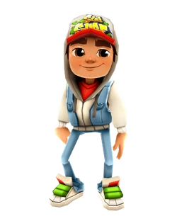
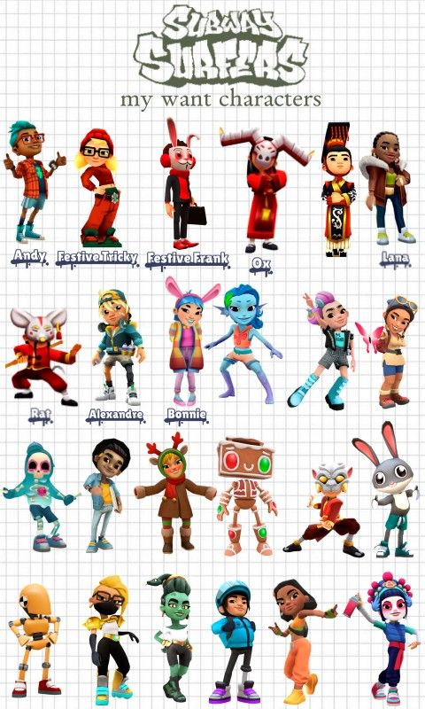
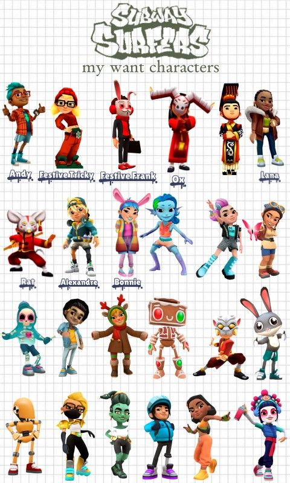

Gallery
Explore images and videos from the game, showcasing various locations, characters, and special events.

.mov) 

Subway Surfers is an endless runner mobile game co-developed by Kiloo and SYBO Games. The game starts by tapping the touchscreen, while Jake (the default character) or any other character sprays graffiti on a train, and then gets caught in the act by the inspector and his dog. The player must then help Jake escape from them.
Meet the main characters: Jake, Tricky, Fresh, Yutani, and more. Each character has unique outfits and abilities that you can unlock as you progress in the game.
Subway Surfers has numerous highlights including memorable moments, key characters like Jake, Tricky, and Fresh, and major events like the World Tour updates that take the game to different cities around the world.
To start playing Subway Surfers, you need to download the game from the App Store or Google Play. The gameplay involves swiping to dodge obstacles and collect coins, power-ups, and other items. Beginners should focus on learning the basic controls and strategies to increase their score and progress in the game.
Explore images and videos from the game, showcasing various locations, characters, and special events.